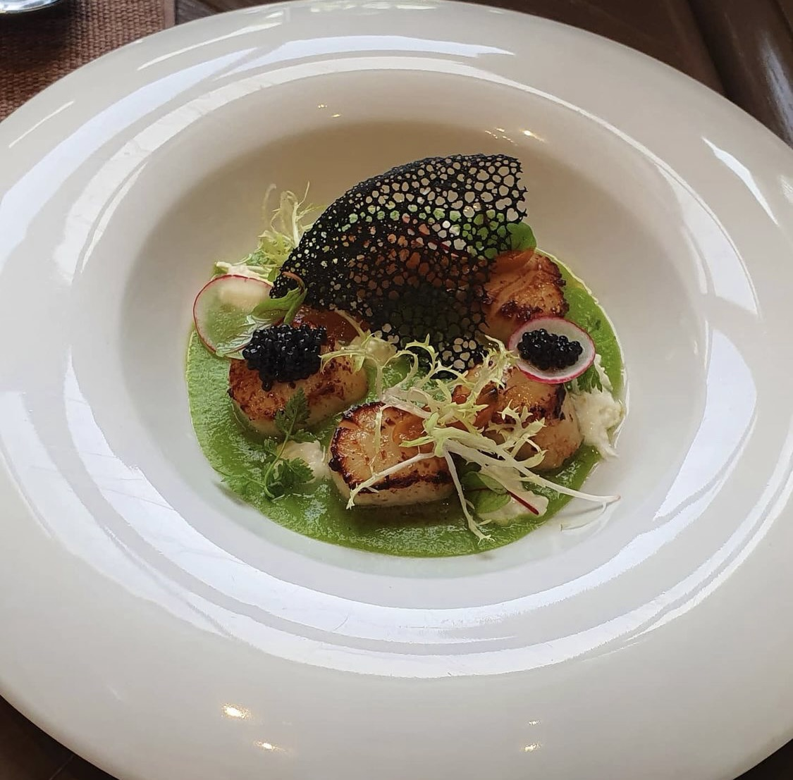

About Me
활동 내역
- 2024.03 ~ 2024.06 : 교내 학술동아리 데나무 부원
- 2024.09 : 농심 AWS 클라우드 직무캠프 수료
TMI
- 99년생
- 왼손잡이
- ENTJ
My Favorite
| 맛집 탐방 | 사진 | 여행 |
|---|---|---|
 |
 |
 |
| 맛집, 사진, 여행 모두를 한꺼번에 즐길 수 있어서 시작된 취미입니다. |
최근 카메라에 관심이 생겼습니다. 사진을 클릭하시면 갤러리로 이동합니다. |
올해 일본 방문 2회! 후쿠오카 & 마쓰야마 일본 시골감성으로 마쓰야마 추천 :) |
Goal
원래는 조리학을 전공하여 호텔에서 근무했지만, 개발자가 되고 싶어 대학에 편입했습니다.
3학년으로 입학해 중간에 들어온 느낌이 있지만, 다들 편하게 다가와 주셨으면 좋겠습니다!
혹시 내년 저희 학과에서 축제 때 주점을 하게 된다면 도움이 되겠습니다 :)
제 목표는 백엔드 분야에 생산형 AI 기술을 접목시켜 더 높은 생산성을 가진 개발자로 성장하는 것입니다.
딥 러닝 모델을 만드는 것도 인공지능 분야의 중요한 부분이지만,
이를 효과적으로 활용하는 능력 또한 개발자의 필수 소양이라고 생각합니다.
빠르게 변하는 기술 흐름 속에서도 휩쓸리지 않고, 주도적으로 대응하며 마치 거친 파도를 서핑하듯 기술을 타고 나아가는 개발자가 되는 것이 저의 최종 목표입니다.
